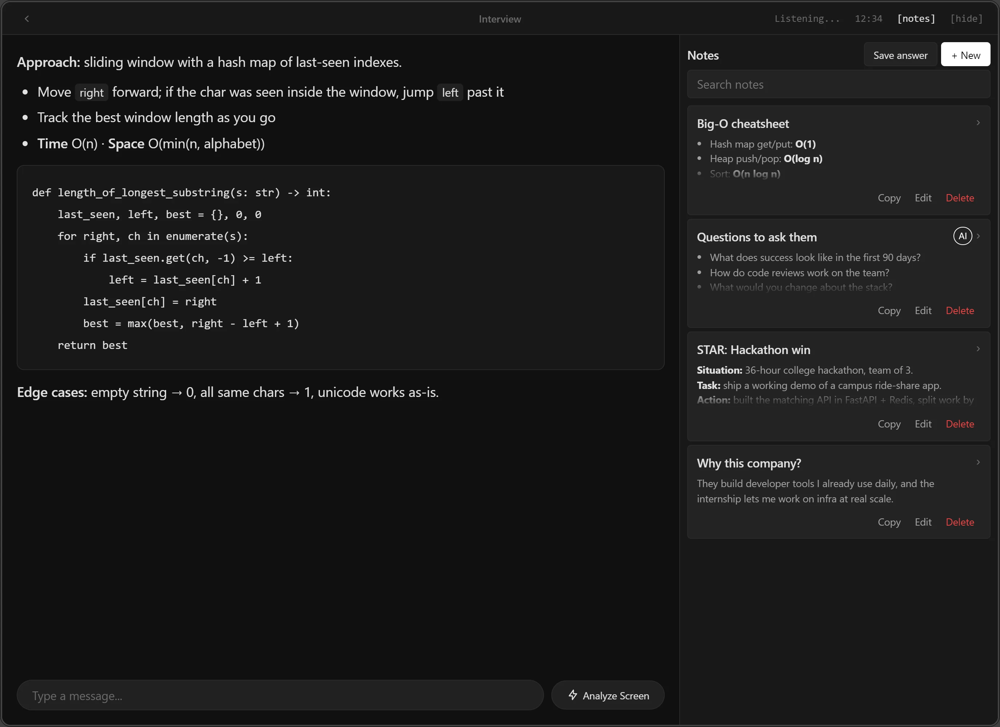
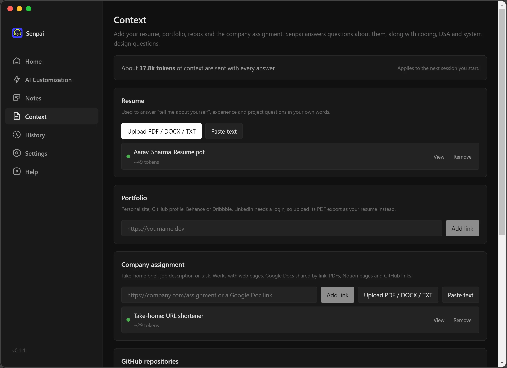
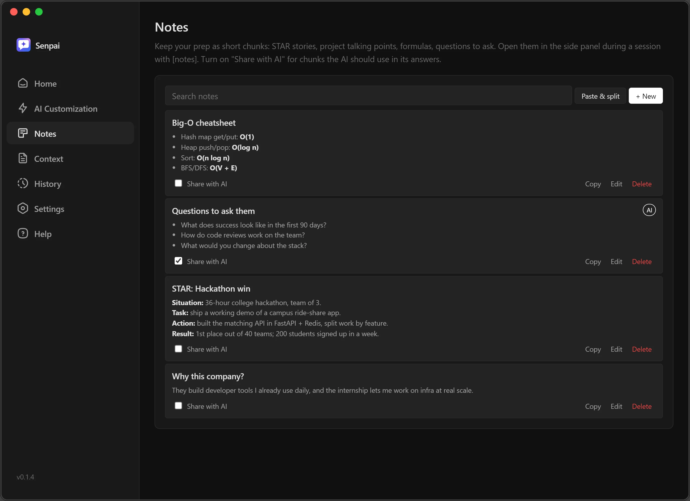
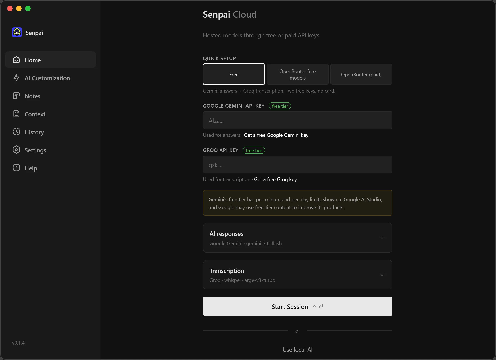

Hears the question
Captures the call audio, detects speech on your PC and transcribes each sentence with Whisper. Lines are tagged Them or Me, so it only answers the interviewer.
Senpai listens to the call, reads your screen when you ask, and shows a ready-to-say answer in a tiny overlay. It knows your resume, your GitHub repo and your notes, so the answers sound like you.

psst — the stickers are draggable
The interviewer speaks, Senpai transcribes it and streams an answer before the silence gets awkward.
Try it: press Ctrl + Enter for the next question
Them
Everything you need for the hard part of an interview: thinking on the spot.
Captures the call audio, detects speech on your PC and transcribes each sentence with Whisper. Lines are tagged Them or Me, so it only answers the interviewer.
Press Ctrl+Enter and a vision model reads the problem on screen: approach, complexity, full code.
Add your resume, portfolio, GitHub repos and the company assignment. Answers use your real projects, never made-up ones.
PDF/DOCX resumes, any website, Google Docs, Notion and whole GitHub repos, condensed to fit the model.

STAR stories, cheat sheets, questions to ask. Paste a doc to split it into chunks, open them next to the answers mid-call.

DSA answers with complexity and edge cases. System design with requirements, data model, scaling and trade-offs.
Google Gemini for answers + Groq Whisper for speech. Two free API keys, no credit card.
Hundreds of models through OpenRouter, free :free ones included, or a fully offline local mode.
Keys, notes and history live on your PC. Open source under GPL-3.0, so you can read every line.
Install Senpai, click Quick setup → Free and paste a free Gemini key and a free Groq key.
Drop in your resume, portfolio and repo on the Context page. Jot STAR stories on the Notes page.
Press Ctrl+Enter, share your screen once, and answers appear as the interviewer talks.

Senpai itself is free. You only choose which AI service does the thinking.
:free models like Gemma 4Yes. The app is free and open source. With the Free setup, Google Gemini and Groq both give free API keys with daily limits, no credit card needed. You only pay if you choose paid OpenRouter models.
The installer isn’t code-signed yet, so SmartScreen warns about an unknown publisher. Click More info → Run anyway. The full source is on GitHub if you want to check or build it yourself.
Your keys, notes, context and history are stored on your PC. Speech clips, transcripts, screenshots and your context are sent to the AI provider you picked to get an answer. Free tiers may use content to improve their models, so check their policies before sharing anything private.
The download is for Windows 10/11. On macOS and Linux you can run it from source with npm install and
npm start.
Yes, there’s a Local AI mode that runs Whisper and a small model on your own PC. It’s slower and needs a decent machine.
That depends on where you use it. Many companies, schools and exams don’t allow AI help during live interviews or tests, so read their rules first. Senpai is great for mock interviews, practice rounds, meetings and presentations.
Free, open source, and ready before your next interview.